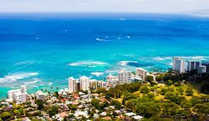

Kineska četvrt. Šetnja kroz Kinesku četvrt je kao putovanje u Aziju. Kinezi su dominantni u ovom delu grada, ali se oseća i uticaj Vijetnamaca, Tajlanđana i Filipinaca. Kineska četvrt je veoma prometna i raznobojna. Brojne su male, zanimljive pijace i dobri i jevtini etnički restorani. U ovoj četvrti se možete tetovirati, konsultovati se sa travarima i jesti mesečeve kolačiće. I Kinesku četvrt je zahvatila modernizacija, ali i dalje preovlađuje tradicija.
Muzej Bišop se smatra za najbolji Polinežanski antropološki muzej na svetu. U njemu je smešten jedini Havajski planetarijum. U Kraljevskom mauzoleju su sahranjeni kraljevi Kameamea II, III, IV i V, kralj Kalakaua i kraljica Liliuokalani. Nedostaje jedino kralj Kameamea I, poslednji kralj koji je po tradiciji sahranjen tajno.
Pančboul (Punchbowl) je peharasti ostatak davno ugašenog vulkanskog kratera. Sa visinom od 150 m i udaljenošću od 1,5 km od centra grada, predstavlja odličan vidikovac. Stari Havajci su ovaj krater nazivali “brdo ljudskog žrtvovanja”. Veruje se da je u krateru bio hram u kome su kremirani prekršioci tabu pravila. Danas se u krateru nalazi i Nacionalno Memorijalno groblje.
Ala Moana, što znači “put do mora”, povezuje centar Honolulua sa Vaikikijem. Zahvata najveći Bič park u Honoluluu i ogroman šoping centar. Šoping centar je najveći na Havajima, sa oko 200 prodavnica.
Na brdima iznad Honolulua se nalaze divne staze za šetnju. Jedna od najlepših je ona koja vodi do Manoa vodopada. Okruženi bujnom, vlažnom vegetacijom, kamenjem prekrivenim mahovinom, drvećem dobijate osećaj da šetate kroz gustu šumu udaljenu od svega. Jedini zvuci, sa kojima se takmiče ptice, su hučanje reke i vodopada. Za nepoverovati je da se sve ovo nalazi na 30 minuta hoda od bučnog Honolulua.
Kapiolani park, koji zahvata 80 hektara površine, na istočnom kraju Vaikikia ka Dijamantskoj glavi, je poklon kralja Kalakaua narodu Honolulua 1877. godine. To je prvi havajski javni park i posvećen je kraljici Kapiolani.
U početku, najveće atrakcije parka su bile konjske trke i koncerti. Danas, u okviru parka su akvarijum, zoološki vrt, Kodakov hula šou, plaža i drugo.
Vaikiki akvarijum postoji od 1904. godine. U akvarijumu se mogu identifikovati ribe koje turisti vide tokom ronjenja. U okviru akvarijuma se nalazi i dvorana iz koje se kroz 4,2 m debelo staklo mogu posmatrati crne ajkule. U akvarijumu se mogu videti i marej jegulje, svetlucave sipe i retke havajske ribe, kao i džinovske školjke, koje su, kada su donete u akvarijum 1982. godine bile duge 2,5 cm, a sada imaju preko 60 cm i najveće su u SAD. Posetioci akvarijuma mogu videti i zelene morske kornjače i havajske Monaške foke.
Zoološki vrt je nedavno renoviran i veoma je atraktivan. Najveću pažnju privlači deo parka u kome je predstavljena Afrička savana sa lavovima, majmunima, belim nosorozima, žirafama, zebrama i drugim savanskim životinjama. Vrt poseduje i zanimljive sektore sa reptilima i tropskim pticama. Zoološki vrt je jedna od najposećenijih atrakcija Honolulua.
Kodak hula šou nudi besplatnu zabavu. Tu se mogu videti i fotografisati hula plesači i plesačice, koji u određenim momentima poziraju sa ispisanim porukama “aloha” ili “Hawaii”. Predstava je iskomercijalizovana, ali privlači turiste.
Vaikiki je jedan od primera koji pokazuje kako turizam može da utiče na fizionomiju i funkcije prostora. Do XIX veka Vaikiki je većim delom bio pod močvarama. Krajem XIX veka uz obalu su sagrađene skromno uređene kolibe. Za one koji su uživali u divnim pejsažima, miru, čistom vazduhu i moru, božanstvenim zalascima Sunca – Vaikiki je bio pravi izbor.
Od 1901. godine počinju da se grade hoteli, zemljište se isušuje i sve se podređuje turizmu. U želji da se iskoriste svi turistički potencijali, često su zaboravljane društvene i moralne norme. Jedan od primera za ovu konstataciju je pokušaj kupovine Sent Agustin katoličke crkve, koja se nalazi u najprometnijoj Kalakaua aveniji. Jedino nekomercijalizovano parče zemljišta uz ovu aveniju pripada crkvi. Japanski preduzimač je pokušao da za $45 miliona otkupi zemljište i da nije došlo do intervencije Vatikana verovatno bi i uspeo u tome.
Dijamantska glava je kupa od tufa i krater, formirani eksplozivnom erupcijom, koja se desila nakon prestanka vulkanske aktivnosti na ovom ostrvu. Sa visinom od 228 metara, Dijamantska glava predstavlja dobar orjentir. U vreme antičkih Havajaca, na vrhu kratera se nalazio hram za žrtvovanje. Kada su Britanski mornari dospeli na ostrvo, primetili su kalcitne kristale kako svetlucaju na suncu i mislili su da su pronašli dijamante. Od tada je krater dobio ime koje nosi i danas.
Unutar kratera je smeštena Havajska nacionalna garda, sedište federalne avijacije i objekti civilne odbrane. Najbolji razlog za posetu Dijamantskoj glavi je šetnja stazom do ivice kratera, sa koje se pruža izvanredan pogled na okolinu.
Hanauma Bej Bič Park. Hanauma je široki, zaklonjeni zaliv sa safirnom i tirkiznom vodom, okružen oštrim vulkanskim stenama. Hanauma znači “krivudavi zaliv” i nekad je to bilo popularno mesto za pecanje. Od 1967. godine zaliv je zaštićen. Sada, pošto se ribe hrane, a pecanje je zabranjeno, ima ih na hiljade. Morski svet se može posmatrati sa obale, ali je mnogo zanimljivije roniti i sve videti iz bliza. Zaliv privlači veliki broj posetilaca, blizu 2 miliona godišnje, pa su često velike gužve. Naravno, to je dovelo do brojnih štetnih posledica. Oštećeni su neki koralni grebeni, broj riba je, zbog hrane koju im daju turisti, toliko povećan da remeti prirodnu ravnotežu. Veliki broj morskih kornjača je otrovan plastičnim kesama bačenim u more. Veliki napori su uloženi da bi se zaustavilo uništavanje ovog zaliva i živog sveta u njemu, ali su dali rezultate.
Si lajf park (Sea Life Park) je jedini morski park na Havajima. U ovom ogromnom akvarijumu, od 1.120.000 litara vode, se mogu videti morske kornjače, jegulje, raže, ajkule i hiljade malih riba koje žive oko grebena. Spiralne stepenice okružuju akvarijum, koji je 5,4 metara dubok, pa se tako mogu videti ribe sa različitih dubina. Pored akvarijuma, u bazenima u amfiteatru su organizovane predstave sa delfinima i kitom koji “hodaju” na repu, “plešu” hula ples i na leđima voze devojke koje rade u parku.
Polinežanski kulturni centar je jedan od najposećenijih na ostrvu, sa 900.000 posetilaca godišnje. Podeljen je na sedam sela koja predstavljaju Samou, Novi Zeland, Fidži, Tahiti, Tongu, Markeze i Havaje. U selima su kolibe autentičnog izgleda, tradicionalne kuće izgrađene od izuvijanih konopaca i rukom iskrivljenih greda. U selima se mogu upoznati tradicionalni zanati, igre, sportovi, plesovi.
Ovaj websajt su kreirali: Vesna, Sanja, Dejan, MIloš, Emil